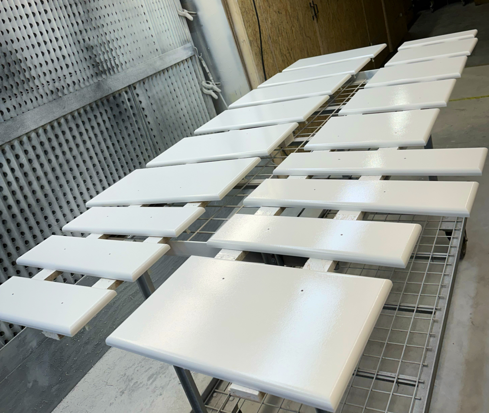
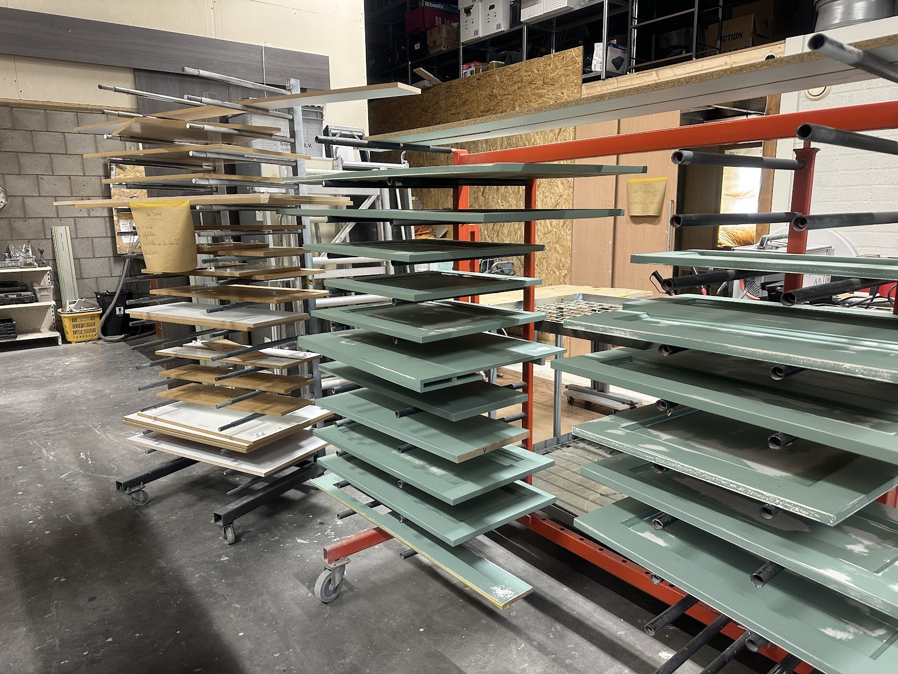
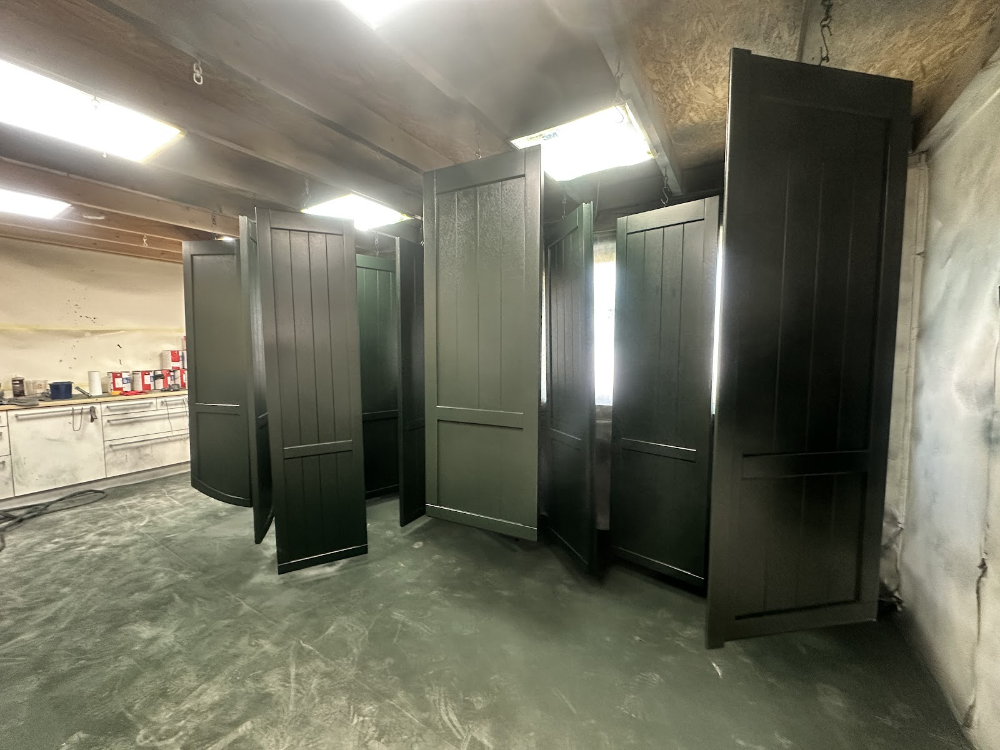
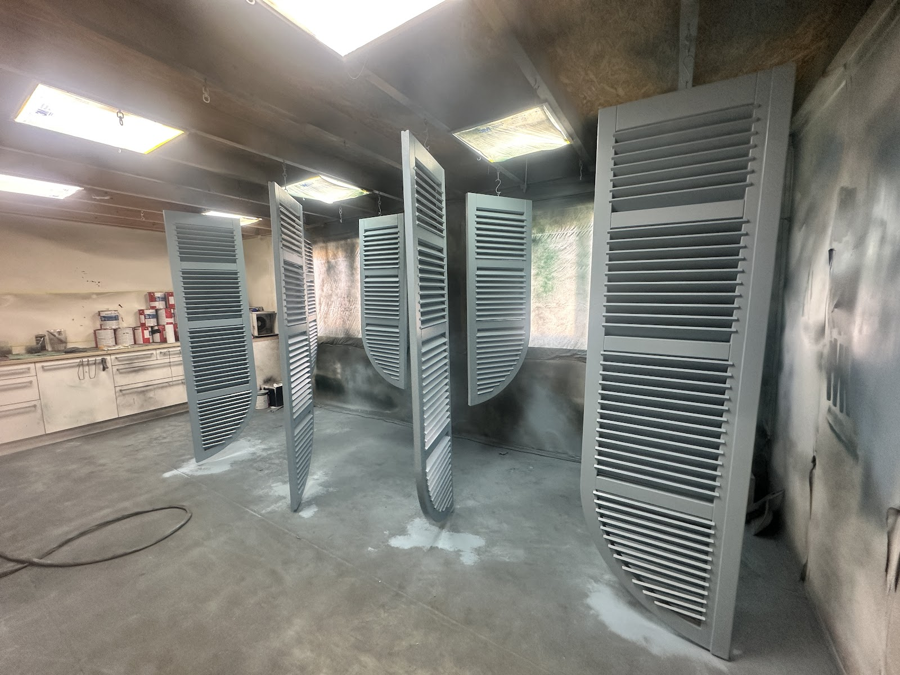
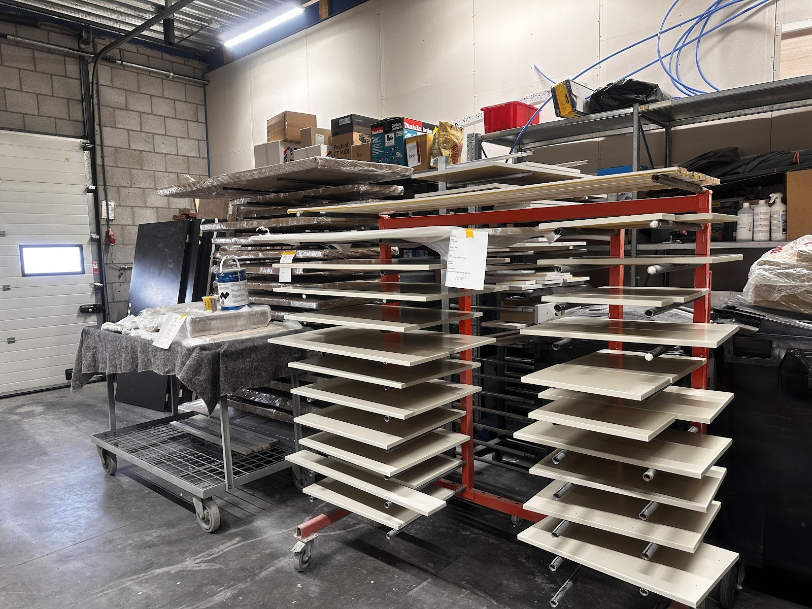
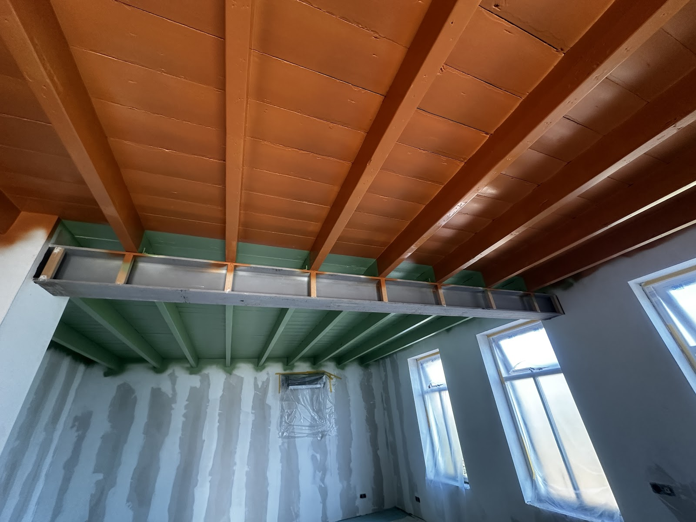
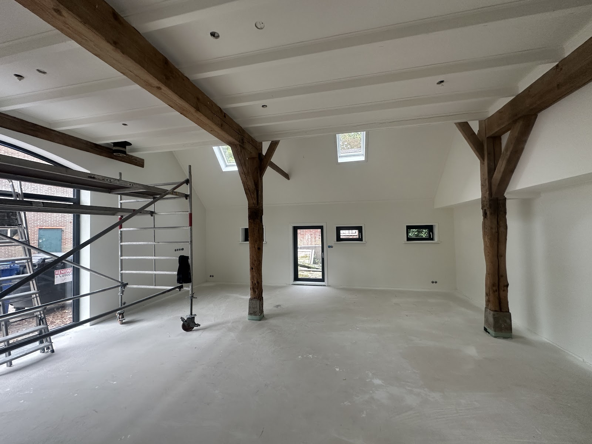
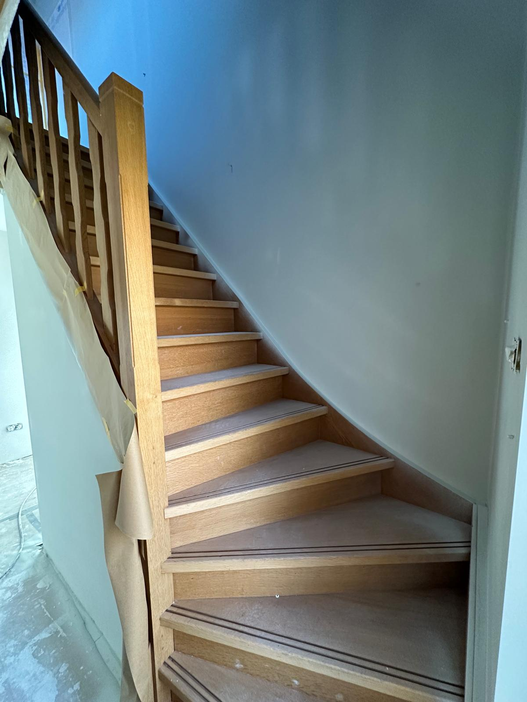

Spuiterij in Lichtenvoorde
Uw keuken als nieuw, zonder nieuwe keuken.
Femke en Gertjan spuiten keukenfronten, kasten, deuren en meubels in de kleur die u kiest. In onze spuiterij of bij u thuis.
4,8 uit 26 Google-reviews

Elke klus een eigen kleur.
Een greep uit wat er de afgelopen tijd uit onze spuiterij kwam. Van saliegroene keukenfronten tot lichtgrijze shutters: u kiest de kleur, wij zorgen dat het strak en egaal wordt.

Een hele keuken in één nieuwe kleur.

Hoge deuren, vrij hangend gespoten.

Lamel voor lamel, overal dezelfde laag.

Rustig en egaal, in de kleur die u kiest.

Op locatie, bij u in huis.
Ook meubels: een tweedehands tafel in een Farrow & Ball-kleur bijvoorbeeld. Twijfelt u of uw stuk geschikt is? Bel even, dan kijken we mee.
De keuken is goed. Alleen de kleur niet meer.
Kastjes die prima sluiten, een indeling die werkt, maar een kleur waar u op uitgekeken bent. Dan hoeft er geen nieuwe keuken in. Wij spuiten de fronten in een kleur die nu bij uw huis past.
U kiest de kleur, wij denken mee. Een tint van Farrow & Ball of een eigen keuze: we bespreken het samen tot het klopt.
"Wat een TOP bedrijf. Femke en Gertjan zijn gedreven mensen met hart voor hun zaak. Goede communicatie en vakmanschap gaan bij deze mensen hand in hand. Mijn keuken is weer als nieuw en ik kan er weer jaren tegenaan."
Zo gaat het.
-
1
U belt of mailt
Vertel wat u wilt laten spuiten. Een keuken, kasten, deuren of één meubel: we horen het graag.
-
2
Samen de kleur kiezen
We denken mee over kleur en afwerking, zodat het resultaat past bij de rest van uw huis.
-
3
Wij spuiten
In onze spuiterij aan de Buys Ballotstraat, of op locatie als het om plafonds, balken of een hele woning gaat.


Ook een heel huis.
Plafonds, balken, wanden, trapgaten: we komen ook bij u op locatie. Alles wordt afgeplakt en afgedekt voordat er gespoten wordt.
"Voor de aankoop van onze nieuwe woning hadden we onszelf een ambitieuze planning opgelegd: de volledige woning (circa 700m2 aan spuitwerk ) binnen één maand cosmetisch renoveren. Dankzij Spuiterij Lichtenvoorde hebben we die planning zonder problemen gehaald."
Femke en Gertjan, volgens hun klanten.
uit 26 reviews
"Femke en Gertjan zijn erg vriendelijke en behulpzame mensen & ze leveren goed werk! Ze dachten fijn met ons mee over de kleur en communiceren prettig en snel. We zijn erg blij met onze gespoten keuken."
"Onze tweedehands tafel door Femke en Gertjan laten spuiten in een Farrow&Ball kleur. Heel blij met het resultaat! Snelle service en fijne communicatie. Echt een aanrader dus"
"Heel fijn bedrijf, Femke en Gertjan zijn heel professioneel en super aardig!! Ze denken goed mee, reageren snel maar werken ook nog eens snel. Een heel leuk en gezellig stel die heel mooi werk levert."
Welke kleur wordt het?
Bel Femke of Gertjan voor een afspraak of om te overleggen wat er mogelijk is. Mailen kan natuurlijk ook.
- Spuiterij
- Buys Ballotstraat 13-A
7131 PN Lichtenvoorde
Route plannen - Openingstijden
-
ma t/m do 09:00 tot 17:00 vrijdag gesloten za en zo gesloten